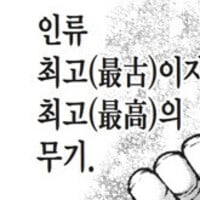

학교에서 주먹달력 배워온 딸
댓글
ㅋㅋㅋㅋㅋㅋㅋㅋ 손 왜저래 ㅋㅋㅋㅋㅋㅋㅋ
ㅋㅋ 벌에쏘인거아니냐?
ㅋㅋㅋㅋㅋㅋㅋ크르릏흙헑ㅋㅋㅋㅋㅋㅋㅋ
ㅋㅋㅋㅋㅋㅋㅋㅋㅋ
뚱뚱하지도 않은데 타고난 체질임? ㅋㅋㅋㅋㅋㅋㅋ
단풍손 근데 아직 애기라서 모름
단풍손 ㄹㅇ 통뼈던데 운동쪽으로 가면 될듯
단풍손은 손바닥이 좁고 손가락이 짧고 굵은, 통통한 작은 손을 말한다.
단풍잎을 닮아서 이렇게 불리며 선천적으로 손가락과 발가락이 기형적으로 짧고 각 마디의 길이가 병적으로 불균형한 형태를 보이는 단지증(短指症)과는 다르다.
반대의 의미로 사용되는 표현은 섬섬옥수(纖纖玉手)이다
오 지식이 늘었다!
섬섬옥수의 반댓멀이러니 ㅋㅋ
ㅋㅋㅋㅋㅋㅋㅋㅋㅋㅋㅋㅋㅋㅋㅋㅋ 손 완전 귀엽네

")
이거 원본 링크좀 ㅋㅋㅋㅋㅋㅋㅋ
주먹왕 랄프 ㅋㅋㅋㅋㅋㅋㅋ
귀엽 ㅋ
귀엽다 ㅋㅋㅋㅋㅋ
장애는 아니지? 어려서 성장이 덜 된거지?
귀여워 ㅋㅋㅋ
ㅋㅋㅋㅋㅋ 좀만 자라면 될거야 ㅋㅋㅋ
얼굴에 살이 없어서 그런가 상상도 못했네 ㅋㅋㅋ
ㅋㅋㅋㅋㅋ
도라미네 커엽다
저거 할때마다 느낀게
다섯번째 관절 두번 누르고 7월 8월 이러는거 개어거지 아닌가 싶었음 ㅋㅋㅋ
햄주먹 ㅋㅋㅋㅋㅋㅋㅋㅋ